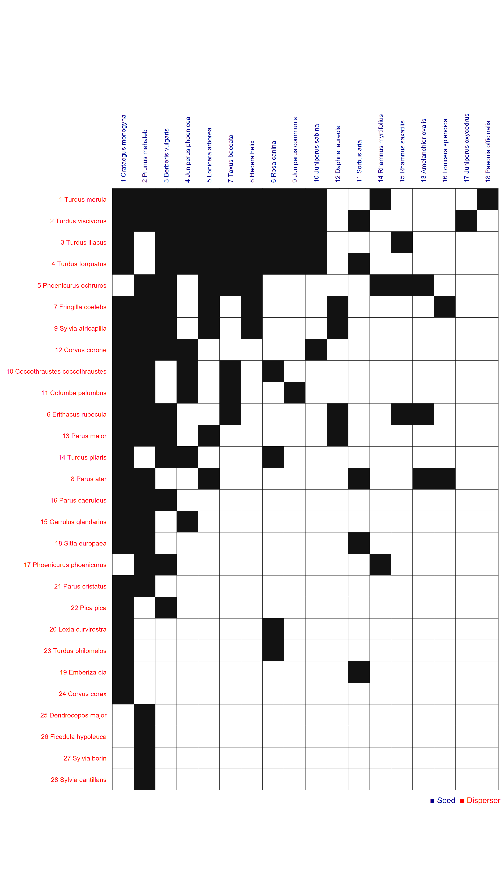

Network: example-try-this-first

Seed 1 Crataegus monogyna, 2 Prunus mahaleb, 3 Berberis vulgaris, 4 Juniperus phoenicea, 5 Lonicera arborea, 6 Rosa canina, 7 Taxus baccata, 8 Hedera helix, 9 Juniperus communis, 10 Juniperus sabina, 11 Sorbus aria, 12 Daphne laureola, 13 Amelanchier ovalis, 14 Rhamnus myrtifolius, 15 Rhamnus saxatilis, 16 Lonicera splendida, 17 Juniperus oxycedrus, 18Paeonia officinalis
Disperser
1 Turdus merula, 2 Turdus viscivorus, 3 Turdus iliacus, 4 Turdus torquatus, 5 Phoenicurus ochruros, 6 Erithacus rubecula, 7 Fringilla coelebs, 8 Parus ater, 9 Sylvia atricapilla, 10 Coccothraustes coccothraustes, 11 Columba palumbus, 12 Corvus corone, 13 Parus major, 14 Turdus pilaris, 15 Garrulus glandarius, 16 Parus caeruleus, 17 Phoenicurus phoenicurus, 18 Sitta europaea, 19 Emberiza cia, 20 Loxia curvirostra, 21 Parus cristatus, 22 Pica pica, 23 Turdus philomelos, 24 Corvus corax, 25 Dendrocopos major, 26 Ficedula hypoleuca, 27 Sylvia borin, 28Sylvia cantillans